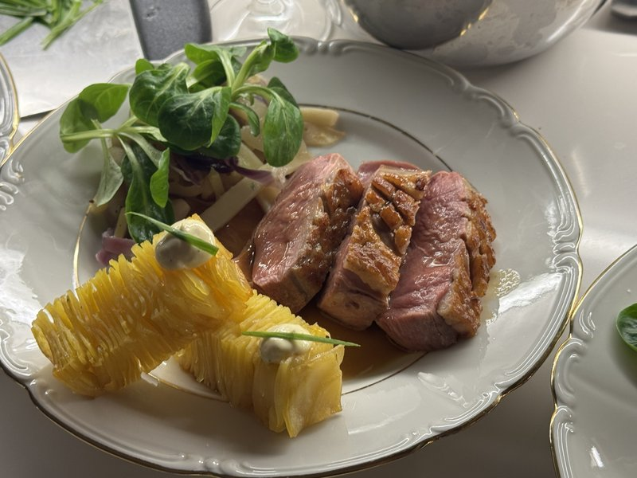
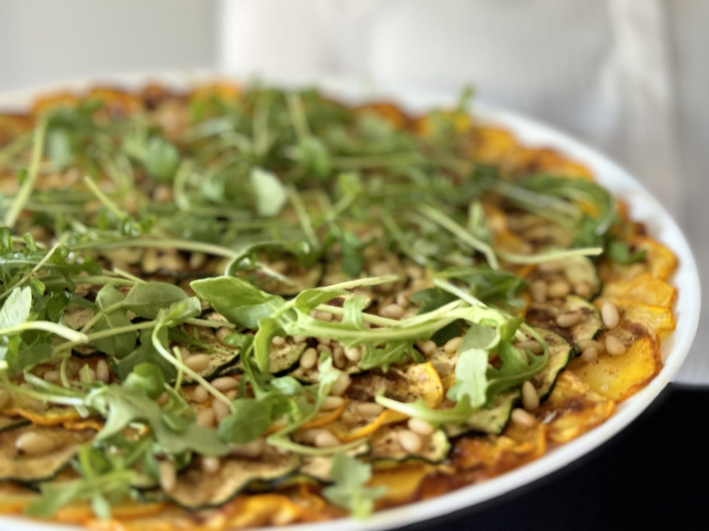
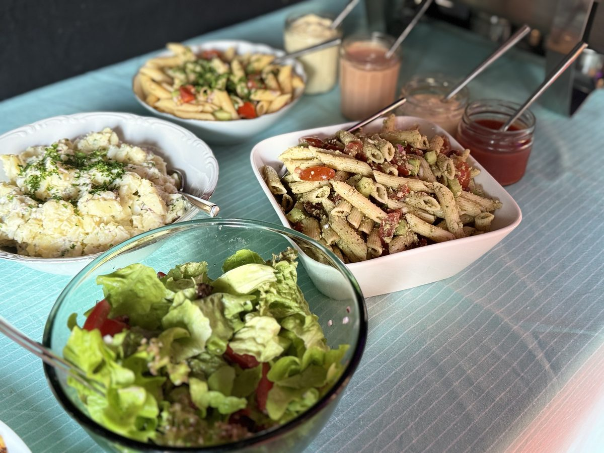
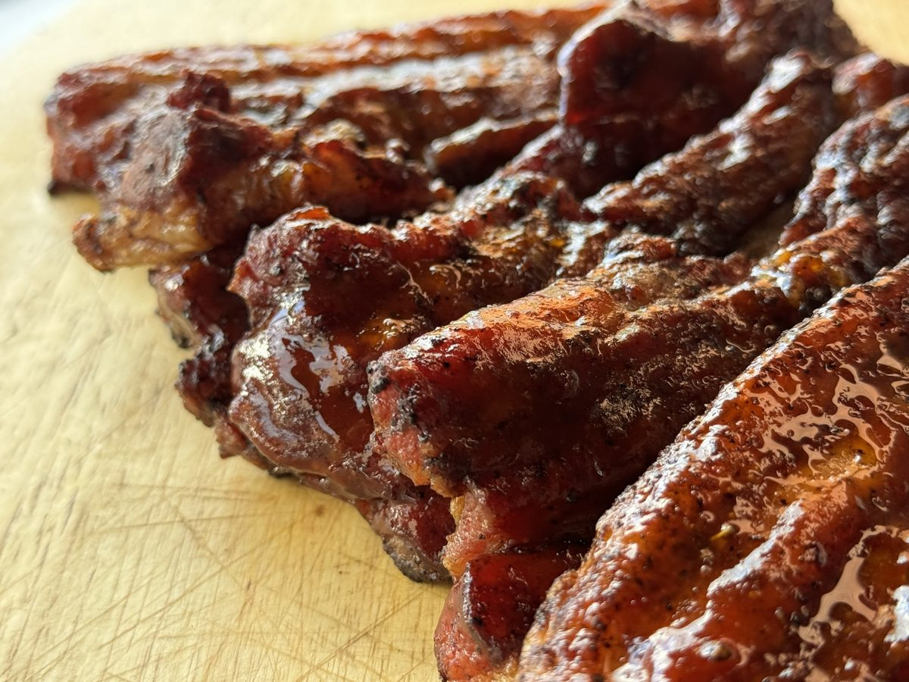
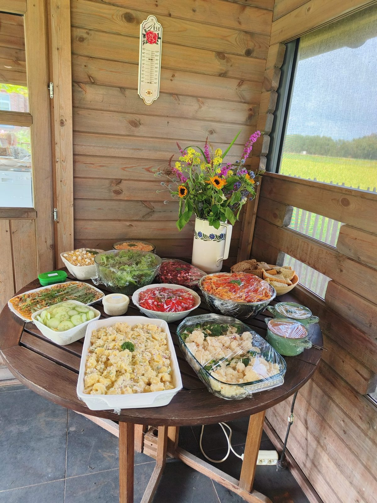
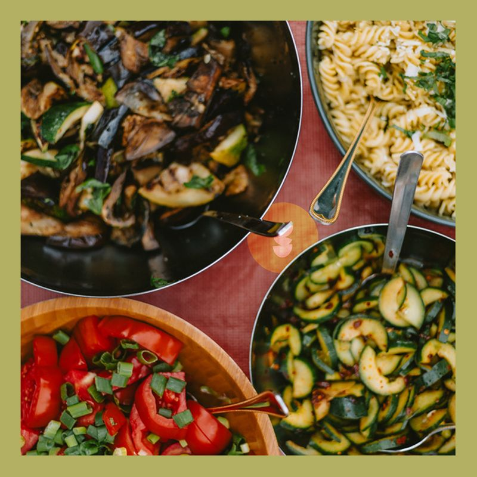
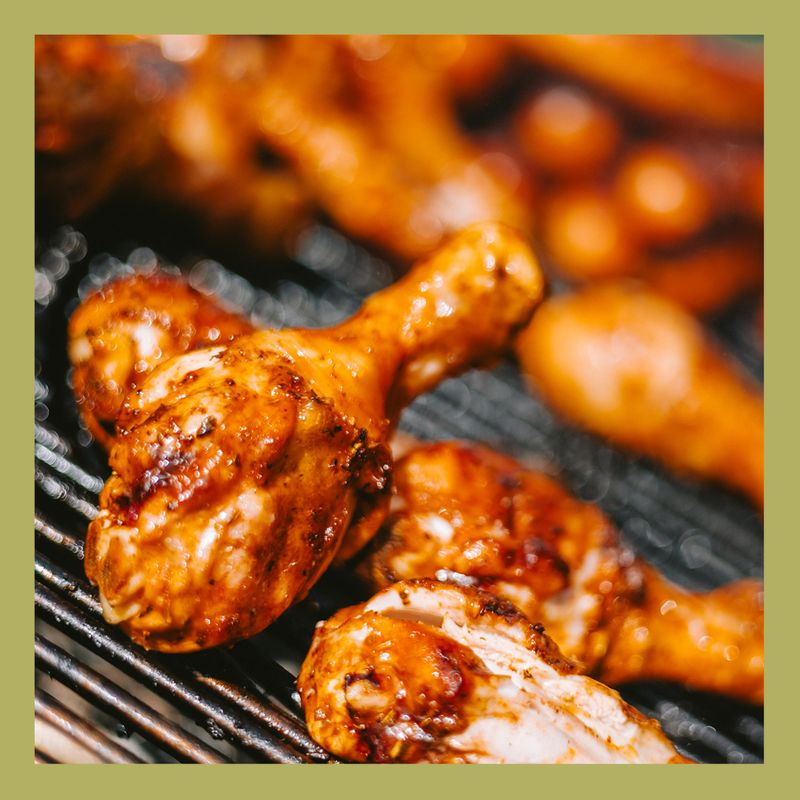
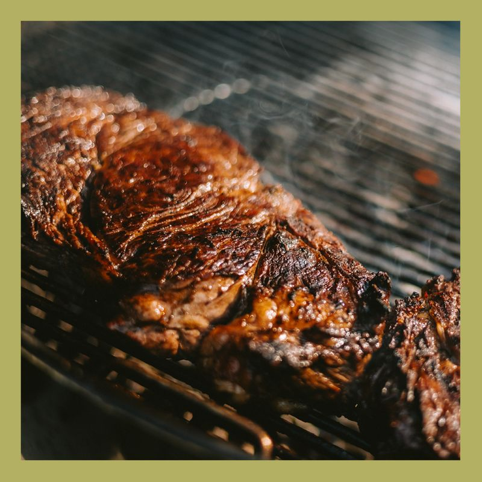

Onze Formules
Kies de formule die past bij jouw feest

Cook@Home
Een compleet driegangenmenu met hapjes, bij jou thuis klaargemaakt.
- Hapjes + drie gangen bij jou thuis bereid
- Vanaf 8 personen
- Bediening en afwas inbegrepen
- Menu volledig op maat samengesteld
- Het gemak van een restaurant, de gezelligheid van thuis
Vanaf €50 per persoon
Ik wil dat je mij een menu voorsteltOnze Hapjes & Dessertjes
Wij serveren onze hapjes in een koekje, glazen bokaaltje, lepel of in een klein bordje. De hapjes kan je op levering bestellen of wij komen je bedienen!
Met vlees
Traaggegaard buikspek met puree en/of compote
Zacht en krokant tegelijkertijd: gebraiseerd en gelakt buikspek, geserveerd met een puree van knolselder, gekarameliseerde wortel. Aangevuld met een compote van appel, mango of een ander fruit.
Sateetje van kippendij
Gemarineerde en geroosterde kippendij: lekker sappig geserveerd met een pittig looksausje.
Mini-vidée
Herkenbare smaken in klein formaat: met verschillende vullingen zoals vol-au-vent, bolognaise of andere stoofpotjes.
Mini caesar salade
De klassieker in het klein: stukjes kip, Romeinse sla en een pittige dressing op basis van ansjovis.
Carpaccio-rolletje van rund
Smelt-in-je-mond, rijk en toch delicaat: dunne sneetjes rundsvlees in een rolletje met een zuurtje bij.
Taco met steak
Bloem of maïstaco met stukjes steak, afgewerkt met friszure chimichurri.
Met vis
Zalmmousse met viseitjes
Fris en toch rijk van smaak: mousse van zalm, zowel natuur als gerookt, met verse kruiden en zalm- of foreleitjes.
Tartaar van zalm
Op z'n Vlaams of op z'n Aziatisch: kleine blokjes rauwe zalm, gemarineerd met soja-sesam of mayo.
Licht gerookte zalm met sojaglazuur
Glinsterende vlokken zalm met een zoet randje: geserveerd op een bedje kruidige zure room op een slablaadje.
Gerookte forelmousse met zure appel
Eén van onze favorieten: afgewerkt met viseitjes en blokjes zure appel.
Scampi met curry-panna cotta
Stukjes huisgemarineerde en gebakken scampi, met een panna cotta van curry en mangosalsa.
Sateetje van scampi
De zomer in een hapje: geserveerd met huisgemaakte tartaarsaus.
Veggie
(kan ook met vlees of vis)
Gebakken courgette-rolletje
Leuk gebracht in terracottapotje: dun gesneden courgette met een mediterraanse vulling en uitgepuurd tomatensausje.
Soepje van het seizoen
Perfecte vuller: pompoen-kokos, broccoli of nog iets anders, een soepje van de groenten die wij uit onze grond halen!
Huisgemaakt kaaskroketje
De Vlaamse klassieker in schattig formaat.
Wrap
De perfecte koude opener: met een mediterraanse vulling.
Toastje van het seizoen
In de koude maanden met brie en vijgenconfituur.
Deegrolletje
Met spinazie, feta en pijnboompitten. Kan ook met vlees.
Dessertjes
Geserveerd in bokaaltjes of kommetjes
Tiramisu
De klassieker in klein formaat: perfect als afsluiter van de avond.
Panna cotta met vruchtencoulis
Fris, fruitig en delicaat.
Crumble met appel
Leuk contrast tussen het korrelig zoet deeg en de even zoete maar zijdezachte stukjes appel.
Chocolademousse
Romig, vol van smaak en gemaakt van donkere chocolade.
Rijstpap
Gemaakt met saffraan.
Barbecue
Daar is de zon, daar zijn de barbecues!







Wil je je gasten graag iets meer bieden dan een rauwe wortel en wat sla? Bestel dan onze barbecuegroentjes!
12 bijgerechten
- Pastasalade: Grieks, Italiaans of Vlaams
- Aardappelsalade
- Gegrilde aubergines en courgettes met pijnboompitten en rucola
- Parelcouscoussalade met gestoofde groentjes
- Tomaten met uitjes
- Komkommer: klassiek of aziatisch
- Watermeloen, feta en rode ui
- Bloemkool-broccolischotel
- Coleslaw (wortel, spitskool, rode ajuin en appel)
- Gewone sla
- Verschillende sauzen
- Zelfgebakken brood
Vanaf €12 per persoon
Ook geen goesting om zelf vlees te bakken? Dan komt Tersagoesting dat ter plaatse voor jou doen!
Goesting gekregen?
Stuur ons een e-mail met de gewenste formule, aantal gasten en datum en wij bezorgen je een offerte.